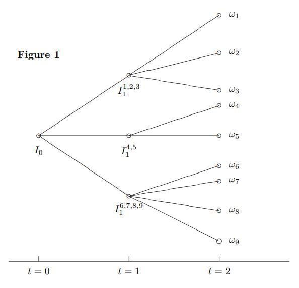
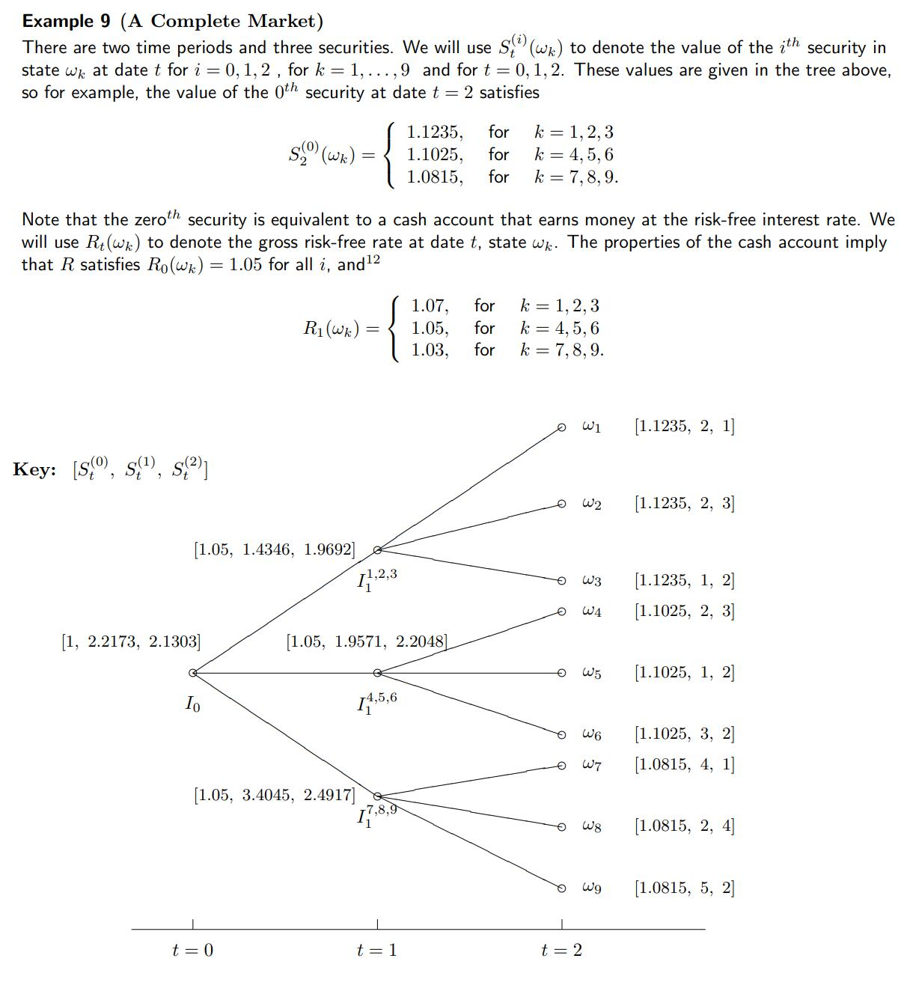
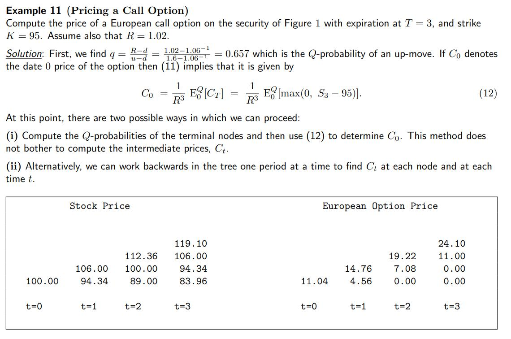

回顾：非齐次线性方程组的解与矩阵的列秩
假设 \(A: (m\times n), x:(n), b:(m)\)，\(Ax = b\)
若方程组有解，则 \(b\) 是 \(A\) 的列向量的线性组合。
如果 \(A\) 的列秩大于等于 \(m\)，\(A\) 的列向量能够张成 \(\mathbb{R}^m\)，则对于任意 \(b\)， \(Ax=b\) 有解。
典型的 \(m\times m\) 满秩矩阵 \(A\) 可逆， \(Ax=b\) 有唯一解 \(A^{-1}b\)。
非齐次线性方程组有解的充分必要条件是其系数矩阵和增广矩阵的秩相等，即包含 \(b\) 后的列空间没有变大，可以被原系数矩阵的列向量表示。
单阶段的鞅定价理论
符号表示和定义
\(t=1\) 时刻的不同状态: \(\omega_1, ..., \omega_m\)。
\(S_0^{(i)}\): \(0\) 时刻 \(i\) 证券的价值。
\(S_1^{(i)}(\omega_j)\): \(1\) 时刻第 \(j\) 状态第 \(i\) 证券的价值。
\(P = (p_1, ..., p_m)\): 每个状态的真实概率分布
套利
- Type A arbitrage: \(t=0\) 即刻获利， \(t=1\) 没有成本。
- Type B arbitrage: \(t=0\) 非正成本， \(t=1\) 有正概率获利，零概率损失。
线性定价 Linear pricing
Type A 无套利要求，远期获利如果是两个证券的获利的组合，则当前定价也应是两个证券相同系数的线性组合。
Elementary Securities, Attainability & State Prices
基本证券：
对应 m 个状态，只有一种状态下收益为 1，其余为 0。\(\mathbb{R}^m\) 的一组基。
可获得性：
\[\begin{bmatrix} X(w_1) \\ ... \\X(w_m)\end{bmatrix} = \begin{bmatrix} S_1^{(0)}(w_1) & ... &S_1^{(N)}(w_1) \\ & ... \\ S_1^{(0)}(w_m) & ... &S_1^{(N)}(w_m) \end{bmatrix} \begin{bmatrix} \theta_0 \\ ... \\ \theta_N\end{bmatrix}\]
注：是 A 型套利 - 线性定价的延申。 \(X = S_1\theta\)， \(\theta\) 称为复制组合。\(X\) 是该组合 1 时刻的价值。
例: 对于给定的 \(S1\)，能求出 \(\theta\)， \(X\) 就 attainable。与资产的0时刻成本无关。
1 | S1 = np.array( |
1 | (array([-1. , 1.5, 2. ]), |
A型套利: 指 \(\theta\) 满足 \(S_0\theta < 0\)， \(S_1\theta = 0\)
B型套利: \(S_0\theta \leq 0\)， \(S_1\theta \geq 0\)(且不恒等于0)
状态价格:
such \(\pi :(m,)\) that:
\[P = \pi^TX\]
注：\(\pi\) 使得任意可获得的证券 \(X\) 能够被公允定价并不存在套利机会。
如果 k-th Elementary security is attainable,
\[P = \pi_k\]
其价格必为 \(\pi_k\)。 同时所有不同的 state price 向量 \(\pi\) 的第 k 项必然相同。
状态价格的求解：
在例子中，我们有3种security，4种状态。
\(S_1\) 矩阵的每一列是一种 security 在 m 种状态下的价值。\(S_0\) 是 N 种 security 在 0 时刻的价格。
对某种资产，状态价格加权不同的状态得到 0 时刻资产的价值。
\[S_0[i] = S_1^T[i]\pi\]
对3种资产就建立了关于状态价格向量 \(\pi\) 的方程组：
\[S_0 = S_1^T \pi\]
\(S_1^T\) 是一个 \(3\times 4\) 矩阵。一般的例子里无冗余资产，即 \(S_1^T\) 的行满秩。列不满秩因而非齐次方程组 \(S_0 = S_1^T\pi\) 的解 \(\pi\) 有无穷多解。取合适的通解系数 \(\epsilon\) 得到正解。
以 计价标准资产 (numeraire security) 折价
计价标准资产(numeraire security)只需满足任意时刻价格严格为正。
Deflated:
\[\bar{S}_t^{(i)}(w_j) := \frac{S_t^{(i)}(w_j)}{S_t^{(n)}(w_j)}\]
计价资产本身折价后为1。
现金账户(cash account)
1 -> 1+r。
习惯第0个资产是现金账户。
等价鞅测度 EMM (Equivalent Martingale Measure)
等价鞅测度 / 风险中性测度 满足： * 所有状态的概率大于零 * 折价后的证券价格是鞅
\[\bar{S}_0^{(i)} := E_0^Q \left[\bar{S}_1^{(i)} \right]\]
注意EMM 和某个 numeraire 是对应的。更换 numeraire 时发生测度变换，称为 EMM 变换。
完备市场 Complete markets
完备市场具有所有的基本证券 (Elementary securities) \(e = [e_1, ..., e_m]^T\)。
某种证券 \(x\) 在 \(1\) 时刻的价值向量 (\(m\) 种状态)
\[x = [x_1 ... x_m]^T\]
可以表示为基本证券的线性组合
\[x = \sum_{i=1}^{m}{x_ie_i}\]
根据 状态价格(state price) 的定义，也可理解为 \(\pi_k\) 是基本证券 \(e_k\) 的零时刻定价，
\[S_0 = \sum_{i=1}^{m}{x_i \pi_i}\]
如果所有的基本证券都存在，任意的 \(X\) (m 维) 都 attainable，则称市场完备。
单阶段模型中的定价
Proposition 1: 若某个等价鞅测度 Q 存在， 则无套利。
分析：
\[\bar{S}_0^{(i)} := E_0^Q \left[\bar{S}_1^{(i)} \right]\]
结合 EMM 定义中 \(q_k>0\) 以及 \(A, B\) 型套利的定义可以证明 0 时刻价格无法取到负号。 用到的一个性质是资产价格为正。
如果放松 \(q_k>0\) 的约束，就有可能取到负号，从而创造套利机会。
Theorem 2: 假设有一个严格为正的价格过程 \(S_t^{(n)}\) 可以作为计价资产，且有一系列严格为正的状态价格 \(\pi\)，则存在一个唯一对应的风险中性测度 \(Q\)。
证明：
\[\begin{aligned} S_0^{(j)} &= \sum_{k=1}^{m}{\pi_kS_1^{(j)}(w_k)} \\ &= \left(\sum_{l=1}^{m}{\pi_lS_1^{(n)}(w_l)}\right) \sum_{k=1}^{m}{ \frac{\pi_k S_1^{(n)}(w_k) }{\sum_{l=1}^{m}{\pi_lS_1^{(n)}(w_l)}} \frac{S_1^{(j)}(w_k)}{S_1^{(n)}(w_k)} } \\ &= S_0^{(n)} \sum_{k=1}^{m}{ \frac{\pi_k S_1^{(n)}(w_k) }{\sum_{l=1}^{m}{\pi_lS_1^{(n)}(w_l)}} \frac{S_1^{(j)}(w_k)}{S_1^{(n)}(w_k)} } \end{aligned}\]
定义
\[q_k := \frac{\pi_k S_1^{(n)}(w_k) }{\sum_{l=1}^{m}{\pi_lS_1^{(n)}(w_l)}}\]
可以看出 \(Q\) 和 numeraire 的价格、state price 是对应的。
则可以得出 按某计价资产 deflate 的资产价格过程是鞅，以Q为测度。
\[\begin{aligned} \frac{S_0^{(j)}}{S_0^{(n)}} &= \sum_{k=1}^{m}{q_k \frac{S_1^{(j)}(w_k)}{S_1^{(n)}(w_k)} } &= E_0^Q \left[\frac{S_1^{(j)}}{S_1^{(n)}} \right] \end{aligned}\]
Remark 3: 真实概率 \(P\) 和 \(Q\) 的唯一联系是 “等效” —— 有一一映射关系。
无套利 = 正状态价格 \(\pi\) 存在 = 存在等价鞅测度 EMM
Theorem 3 & 4: \(Ax=p, p\geq 0\) 只在 \(p=0\) 时有解，则存在 \(y>0\) 使得 \(A^Ty=0\)。证明使用对偶规划。
解释了在无套利情况下存在 state price \(\pi > 0\)。
Theorem 5 (First Fundamental Theorem of Asset Pricing): 无套利、存在 EMM \(Q\) 是等价的。
Example 5:
1 | S1 = np.array([ |
\(S_0 = S_1^T\pi\) 系数矩阵 \(3\times2\)，秩为2，增广矩阵秩为3。无解。
因而没有一组正的 state price \(\pi\)。有套利机会。
Exercise 4: 找到一个套利策略 \(\theta\)
模仿 Theorem 4 的证明过程，写出 \((m+1)\times(N+1)\) 的矩阵 \(A\)， \[A = \begin{bmatrix} S_1^{(0)}(w_1) &... &S_1^{(N)}(w_1) \\ & ...\\ S_1^{(0)}(w_m) &... &S_1^{(N)}(w_m) \\-S_0^{(0)} &... &-S_0^{(m)} \end{bmatrix} = \begin{bmatrix} 1.05 &2 &3 \\ 1.05 &1 &2 \\-1 &-1.9571 & -2.2048 \end{bmatrix}\] 若可套利，则说明存在 \(x\) 使得 \(Ax \geq 0\) 且不恒等于0。
1 | A = np.array([ |
1 | (array([ 0.0886371 , -0.30878999, 0.1865141 ]), |
Theorem 6: 假设无套利，市场 完备 的充要条件是 \(S_1\) 的秩为 \(m\)。
考虑到 \(S_1\) 的行数为状态数 \(m\)，则应当有 \(m\) 种基本证券，\(n\geq m = r\)。
\(n < m\) 的市场必然是不完备的。
Theorem 7 (Second Fundamental Theorem of Asset Pricing): 假设存在一个计价资产 (严格为正的价格过程) 且无套利 (存在状态价格，EMM)，则市场完备的充要条件是有且仅有一个 EMM / \(\pi\) / Q。需要注意的是 \(\pi\) unique 和 \(Q\) unique 是等价的，可以参考 EMM 定义中 \(q_k\) 的表达式。
证明：假设存在不可获得的 \(X\)，使用对偶规划，得出存在另一个风险中性测度 \(\hat{Q} \neq Q\)。
多阶段鞅定价理论
符号表示和定义
多阶段的二叉树表示：

交易策略 \(\theta_t\) / 自负盈亏的交易策略
Definition 10: 可预测的 (predictable) 随机过程，在给定所有 \(t-1\) 时刻的信息时，\(t\) 时刻的值 \(X_t\) 已知。
Definition 11: 交易策略 (trading strategy) 指 \(\theta_t = \left[\theta_t^{(0)}(w) ... \theta_t^{(N)}(w)\right]^T\)，是关于\(t, w\)的函数。事实上是 \(t-1\) 到 \(t\) 之间的持有数量，在 \(t-1\) 时刻被确定 (根据可预测性， \(w\) 已知)。
有时省略掉 \(w\)，直接表示为 \(\theta_t^{(i)}\)。
根据交易策略的可预测性，同一节点伸出的枝如 \(w_1, w_2, w_3\) 对应前一时间点相同的交易策略。
Definition 12: 价值过程 value process \(V_t(\theta)\) \[V_t = \begin{cases} \sum_{i=0}^m{\theta_1^{(i)}S_0^{(i)}}, &t=0 \\ \sum_{i=0}^m{\theta_t^{(i)}S_t^{(i)}}, &t \geq 1 \end{cases}\]
Definition 13 self-financing trading strategy: 指满足下式的 \(\theta_t\) \[V_t = \sum_{i=0}^N{\theta_{t+1}^{(i)}S_{t}^{(i)}}, t = 1, ..., T-1\] 当然，定义仍然满足 \[V_t = \sum_{i=0}^m{\theta_t^{(i)}S_t^{(i)}}, t = 1, ..., T-1\] 也就是说在 \(t\) 时刻对交易策略进行 rebalancing 后投资组合的价值不变。
self-financing 的交易策略满足： \[V_{t+1} - V_t = \sum_{i=0}^{N}{\theta_{t+1}^{(i)} \left( S_{t+1}^{(i)} - S_{t}^{(i)} \right)}\]
该式表明投资组合价格的变动来自于价格的变动。
连续时间 self-financing trading strategy 则满足
\[dV = \theta_t^T dS_t\]
套利：多阶段
Definition 14:
A 型套利机会指 self-financing 的交易策略 \(\theta_t\) 满足 \(V_0(\theta) < 0\), \(V_T(\theta) =0\);
B 型套利机会指 self-financing 的交易策略 \(\theta_t\) 满足 \(V_0(\theta) = 0\), \(V_T(\theta) \geq 0\) 以及 \(E_0^P[V_T(\theta)] > 0\)。
可获得性和完备市场 Attainability & Complete Markets
Definition 15 & 16: Contingent claim 或有索取权 \(C\) 在 \(T\) 时刻的价值在那时已知。\(C\) 是可获得的，如果存在 self-financing 的 \(\theta_t\) 及其价值过程 \(V_t\)，使得 \(V_T = C\)。
\(V_0\) 可以看作是 \(C\) 的一个复制组合 replicating portfolio。
根据无套利 \(C\) 的价值是 \(V_0\)。
Definition 17: 如果所有 \(C\) 都可获得则 市场完备。
等价鞅测度 EMM
假设一个特定的计价资产 \(S_t^{(n)}\)。
Definition 18：一个 EMM (又称风险中性概率)，\(Q = (q_1, ..., q_m)\)，满足: - \(q_i > 0\) - 折价后的证券价格是鞅。即对于任意 \(s,t \geq 0, i = 0, ..., N\) \[\bar{S}_t^{(i)} = E_t^Q\left[ \bar{S}_{t+s}^{(i)} \right]\] \(E\) 的下标 \(t\) 指该条件期望基于 \(t\) 时刻的已有信息。
多阶段模型中的定价
无套利 = 存在EMM
Proposition 8: 如果某 EMM \(Q\) 存在，则任意 self-financing 的交易策略折价后的价值过程 \(V_t\) 是一个 \(Q\)-鞅。
证明：由于 Definition 18 EMM 的定义，证券价格 \(\bar{S}_t\) 是一个 \(Q\)-鞅，所以 \(V_t\) 作为 \(\bar{S}_t\) 的加权也是 \(Q\)-鞅。 \[E_t^Q[\bar{V}_{t+1}] = \bar{V}_t\]
Theorem 10 (Fundamental Theorem of Asset Pricing: Pt1)
在多阶段模型中，无套利 = 存在 EMM \(Q\)
完备市场 = 唯一的EMM
Proposition 11: 多阶段模型市场完备的充要条件是每个单阶段模型都完备。
证明：
单阶段完备即：任意 \(X = [x_1, ..., x_m]^T\), \(X = S_1\theta\) 有解。 多阶段完备则 \(X = S_T...S_1\theta\) 有解。
充分性：根据递推易知，假设单阶段完备，从最后向前递推，\(X = S_T \theta\) 有解 \(\theta_T\)，\(\theta_T = S_{T-1}\theta\) 有解 \(\theta_{T-1}\)，如此递推下去\(X = S_T...S_1\theta\) 有解，则多阶段完备；
必要性：若递推中的一个环节无解，则多阶段完备自然不满足。
Theorem 12 (Fundamental Theorem of Asset Pricing: Pt2) 假设存在 numeraire 的 value process，无套利，则市场完备的充要条件是有且仅有一个风险中性的鞅测度 \(Q\)。
证明：多阶段完备 \(\leftrightarrow\) 单阶段完备。每个阶段都有一个条件概率分布。根据条件概率公式可以得到唯一的总的概率分布。
状态价格的表示
CRR 二叉树的中间节点并不直接对应某一种确定的状态 —— 可能对应几个不同的叶子节点。对于 \(I_1^{4,5}\) 这个节点状态价格的符号表示应当包含所有的最终状态 \(\pi_{0}^{1}(w_4, w_5)\)。 通用的表达式 \(I_t^{t+s}(\Lambda)\)，\(\Lambda\) 表示该中间结点所有 \(t+s\) 时刻叶子节点状态的集合。
样例
样例9：完备市场

1 | S2 = np.array([ |
Q1-Q3 State prices.
Because the state price is unique and positive, the market is complete, no arbitrage.
1 | # Calculate for pi |
array([0.19998972, 0.30003084, 0.43455888, 0.3000381 , 0.30000238,
0.35234048, 0.24997612, 0.39996427, 0.3209334 ])1 | pi_01 = np.linalg.solve(S1.T, S0) |
array([0.2996155 , 0.30044796, 0.35231749])1 | pi_02 = (pi_12.reshape(3,-1) * np.expand_dims(pi_01, axis=1)).flatten() |
array([0.05992002, 0.08989389, 0.13020058, 0.09014583, 0.0901351 ,
0.10585998, 0.08807096, 0.14091441, 0.11307045])Q4 Calculate for the EMM Q. Use State Price & Numeraire.
1 | q = pi_02 * S2[:, 0] |
array([0.06732014, 0.10099579, 0.14628035, 0.09938578, 0.09937395,
0.11671062, 0.09524874, 0.15239893, 0.12228569])Q5 when swithch the numeraire to the 2nd security
1 | # the risk neutral measure using the 2nd security as numeraire |
array([0.0281275 , 0.12659328, 0.12223685, 0.12694808, 0.08462198,
0.09938504, 0.04134204, 0.26459073, 0.10615449])Q6 Find the price of a call option on the 1st asset with strike k=2 and expiration date t=2.
1 | # Use state price pi |
0.6212132432607461 | # or use risk neutral probability measure |
0.621213243260746Q7 Recompute the price of the call option using the Q5 martingale
1 | # Deflate by the 2nd asset |
0.6212132432607459样例10 不完备市场
在样例9的基础上，\(t=1\) 的后两个节点变为 \(I_1^{4,5}, I_1^{6,7,8,9}\)。
Q1：证明 \(w4, w5\) 对应的单阶段模型可套利
只需证明不存在正的state price。假设存在正的 \(\pi_1^2{(w_4, w_5)}\) \[S_1 = [1.05, 1.9571, 2.2048]\] \[S_2 = \begin{bmatrix} 1.1025 &2 &3 \\ 1.1025 &1 &2 \end{bmatrix}\] \[S_1 = S_2^T \pi_1^2{(w_4, w_5)}\]
这个非齐次线性方程组无解：增广矩阵秩为3 而原矩阵秩为2。
Ex11：如何为该单阶段模型找到一个套利的交易策略 \(\theta\)？
仿照 Exercise 4
2
3
4
5
6
for i in range(10000):
theta = np.random.randn(3)
if (np.dot(A, theta) > 0).sum() == 3:
break
theta, np.dot(A, theta)
2
array([0.07649101, 0.59933239, 0.02708594]))
Q2: 该模型不完备是由于 \(I_1^{6,7,8,9}\) 开始的单阶段模型 \(m = 4, n = 3, r < 4\)。
Q3: 说明为什么远期合约是可获得的。
用到了 Definition 15&16：某 contingent claim 可获得，如果存在 self-financing 的交易策略 \(\theta\) 和对应的价值过程 \(V_t\) 使得 \(V_T = C\)。 远期的价值过程也是以Q为测度的鞅。
股息和中间时刻现金流
Deflated cumulative gains processes, rather than deflated security prices are now Q-martingales. \[G_t = S_t + \sum_j{D_j}\]
\(S_t\) 称为 \(t\) 时刻 ex-dividend price。
\[\bar{S}_t = E_t^Q\left[ \sum_{j=t+1}^{t+s} {\bar{D_j}} + \bar{S}_{t+s} \right]\]
Self-financing 的交易策略 \(\theta_t\) 满足
\[V_{t+1} - V_t = \sum_{i=0}^N \theta_{t+1}^{(i)} \left(S_{t+1}^{(i)} + D_{t+1}^{(i)} - S_{t}^{(i)} \right)\]
付息的资产的价格 ex-dividend price 不能作为 numeraire。但是 cumulative gain 可以。
在连续时间模型中，假设一段时间内付息 \(qS_tdt\)，总的收入 \(G_t = e^{qt}S_t\) 可以作为numeraire。
鞅定价应用
CRR 二叉树模型中的定价
CRR 假设每个阶段只有两种情况：上升或下降 (\(u/d\))。规定 \(d = 1/u\)。如此二叉树的复杂度每阶段增加量与阶段数是线性关系。
假设有一个现金账户，自然增长率 \(R\) 恒定。
Proposition 13: 无套利当且仅当 \[d < R <u\]
证明：根据 First fundamental theorem of asset pricing, 无套利等价于有一个正的 EMM \(Q\)。对于单阶段套用 EMM 表达式 \[\frac{S_t}{R^t} = E_t^Q \left[\frac{S_{t+1}}{R^{t+1}} \right]\] 假设上升概率 q，下降概率 (1-q)，化简 \[q = \frac{R-d}{u-d}\] 需满足 \(0<q<1\)，则要求 \[d< R < u\]
显然 \(Q\) 是 unique 的，则根据 Second fundamental theorem of asset pricing，市场完备。
该模型证券定价用 EMM
\[ \frac{X_t}{B_t} = E_t^Q \left[\frac{X_{T}}{B_{T}} \right]\]
\[X_t = \frac{E_t^Q[X_T]}{R^{T-t}}\]
定价一个 European Call

1 | R = 1.02 |
1 | 11.04316628798494 |
- 可以 \(t=0, T=3\)，直接使用 \(X_t = \frac{E_t^Q[X_T]}{R^{T-t}}\) 定价。CRR 树的最终状态满足二项分布 \(Bin (T-t, q)\)。
- 也可以逐阶段看作伯努利分布。
反直觉：当 \(R\) 上涨，该 Eurocall 价格上涨
1 | R = 1.04 |
1 | 15.63697997607011 |
\(K, S_t\) 不变，该期权的 CRR 也不变，而折价变大，直觉是该期权的价值减少。然而事实是 \(X_t\) 升高。
显然第一个解释是 \(R\) 的上升使得 \(q\) 变大 —— 即更有可能资产价格上升。这种效应大于折价的效应。
此外，将 \(R\) 的上升视为 cash account 的收益的增加，根据无套利，整个市场其他基础资产的收益也增加。而 European Call 的价值的上升与 underlying asset 的方向是一致的 —— 其收益理应上升。
期货定价
\[ 0 = E_{n-1}^Q\left[\frac{F_n - F_{n-1}}{B_n}\right]\]
\[F_{n-1} = E_{n-1}^Q\left[ F_n \right]\]
整个价值过程 \(V_t\) 是一个以现金为 numeraire 的 Q-martingale。所以迭代期望得到
\[F_0 = E_0^Q[S_n]\]
远期定价
知乎：在定价上，期货与远期的最重要区别就是期货的盯市保证金每日结算。先说结论：
- 无风险利率不变且所有到期日都相同时，到期日相同的期货价格和远期价格相等；
- 当标的价格与利率呈较强的正相关时，期货价格>远期价格；
- 当标的价格与利率呈较强的负相关时，期货价格<远期价格。
"Margin Call"。期货需要随时补交保证金。
远期不涉及到中间价格。单阶段。
\[0 = E_0^Q \left[ \frac{S_n - G_0}{B_n} \right]\]
\(G_0\) 在 0 时刻已知，
\[G_0 = \frac{E_0^Q[\frac{S_n}{B_n}]}{E_0^Q[\frac{1}{B_n}]} \]
如果 underlying asset 有中间现金流如 storing cost / dividend，影响分母。
如果不付息，
\[G_0 = \frac{S_0}{E_0^Q[\frac{1}{B_n}]}\]
Theorem 14: 如果 \(B_n\) 和 \(S_n\) 独立于 \(Q\)，则期货价格和远期价格相同 \(G_0 = F_0\)。 一个特例是利率 deterministic。
思考：若利率与标的资产价格正相关，期货价格 \(F_0\) 高于远期价格 \(G_0\)，为何？
假设某完全正相关情形， \[S_n = ax, B_n = x, a>0\] \[G_0 = \frac{E_0^Q[a]}{E_0^Q[\frac{1}{x}]} = \frac{a}{E_0^Q[\frac{1}{x}]}\] \[F_0 = aE_0^Q[x]\] 证明 \(x\) 严格大于0时， \(E[1/X] \geq 1/E[x]\)
应用 cauchy-schwarz 不等式， \[\begin{aligned}E[x]E[1/x] &= \sum{(x_ip_i)}*\sum{(p_i/x_i)}\\ &\geq \left[\sum{\sqrt{(x_ip_i)}} * \sqrt{(p_i/x_i)} \right]^2 \\ &= \left[ \sum{p_i} \right]^2 \\ &= 1 \end{aligned}\] 所以当 \(a>0\) 时，\(G_0 < F_0\)。
以期货为标的资产的 American put
参数： \(u=1.03, d=0.98, R=1.01, q=0.6\)； \(T=6\)，期权 Strike \(K = 105\)
1 | def CRR(T, u, d, R): |
1 | Early Exercised at (5, 2) |
首先生成资产价格 \(S\) 的 CRR 树。在此基础上生成期货 \(F\) 的树。
在任意 \(0\leq k \leq 6\) 阶段，根据期货定价的公式 (\(F_n=S_n\))
\[F_k = E_k^Q[S_6]\]
考虑原始资产的定价也是一个 Q-鞅,
\[ \frac{S_k} {R^k} = E_k^Q\left[\frac{S_6}{R^6}\right]\]
\[ S_k R^{6-k} = E_k^Q[S_6] = F_k\]
因而可以根据上式和标的资产的 CRR 二叉树直接得出期货的 CRR 二叉树。
American put 的二叉树可以逐节点回溯 （单阶段模型），考虑提前行权。
\[p_{t-1} = \max{\left(K-f_{t-1}, \frac1R E_{t-1}^Q[p_t] \right)}\]
最终得到 \(p_0 = 2\)。（该式的证明见下一节）
最优停时和美式看跌期权定价
先前在 Forwards, Swaps, Futures and Options 中提到过，美式看涨一般不提前行权，其定价同欧式看涨。而美式期权则涉及到提前行权，其定价更加复杂（上一章已经给出公式）。为确定美式期权的最优行权时刻，需要首先了解鞅的最优停时理论。
\([t, T]\) 时间段上的最优停时 (\(\tau\)) 对应最优的 payoff:
\[Z_t := \max_{\tau \in \{t, .., T\} }{E_t^Q \left[ \frac{Y_\tau B_t}{B_\tau} \right]}\]
Snell Envelope: the smallest supermartingale dominating a stochastic process.
\(\frac{Z_t}{B_t}\) 是 \(\frac{Y_t}{B_t}\) 的最小的上鞅。
最优停时 \(\tau\) 的解:
\[\tau^*(t) = \min{\{s\geq t: Z_s = Y_s\}}\]
从 \(T\) 回溯到 \(t\)
\[\frac{Z_{T-1}}{B_{T-1}} = \max{ \left\{ \frac{Y_{T-1}}{B_{T-1}}, E_{T-1}^Q \left[ \frac{Y_T}{B_T} \right] \right\} }\]
推广到普遍情形，
$$ \[\begin{aligned} \frac{Z_t}{B_t} &= \max{ \left\{ \frac{Y_{t}}{B_{t}}, \max_{\tau \geq t+1} E_{t}^Q \left[ E_{t+1}^Q \left[ \frac{Y_\tau}{B_\tau} \right] \right] \right\} } \\ &= \max{ \left\{ \frac{Y_{t}}{B_{t}}, E_{t}^Q \left[ \max_{\tau \geq t+1} E_{t+1}^Q \left[ \frac{Y_\tau}{B_\tau} \right] \right] \right\} } \\ &= \max{ \left\{ \frac{Y_{t}}{B_{t}}, E_{t}^Q \left[ \frac{Z_{t+1}}{B_{t+1}} \right] \right\} } \\ \end{aligned}\]$$
则 \(\frac{Z_t}{B_t}\) 可以 DP 求解，同时也是一个上鞅。
可以通过无套利证明 American put 的价格就是 \(V_t = Z_t\), \(\tau^*(0)\) 是最优行权日期。
例：为 American put 定价
1 | a, f = CRR(T=3, u=1.06, d=1/1.06, R=1.02) |
1 | array([[100. , 0. , 0. , 0. ], |
1 | def AmericanPut(underlying_asset, q, K ,R): |
1 | Early Exercised at (2, 0) |
可以看到在 \(t=2\) 的第0种情况， 提前行权。
Revisit: American call 不提前行权
如果利率非负，标的资产无股息，则美式看涨期权提前行权不最优。
证明：
\[\begin{aligned}E_t^Q \left[ \left(\frac{S_{t+s}}{B_{t+s}} - \frac{K}{B_{t+s}} \right)^+ \right] &\geq E_t^Q \left[ \frac{S_{t+s}}{B_{t+s}} - \frac{K}{B_{t+s}} \right] \\ &= \frac{S_t}{B_t} - K E_t^Q \left[ {\frac{1}{B_{t+s}}} \right] \\ & \geq \frac{S_t}{B_t} - \frac{K}{B_t} \end{aligned}\]
改写表达式使其满足下鞅形式，
\[E_t^Q \left[ \left(\frac{S_{t+s}}{B_{t+s}} - \frac{K}{B_{t+s}} \right)^+ \right] \geq \left( \frac{S_t}{B_t} - \frac{K}{B_t} \right)^+\]
In probability theory, the optional stopping theorem (or Doob's optional sampling theorem) says that, under certain conditions, the expected value of a martingale at a stopping time is equal to its initial expected value. Since martingales can be used to model the wealth of a gambler participating in a fair game, the optional stopping theorem says that, on average, nothing can be gained by stopping play based on the information obtainable so far (i.e., without looking into the future). Certain conditions are necessary for this result to hold true. In particular, the theorem applies to doubling strategies.
The optional stopping theorem is an important tool of mathematical finance in the context of the fundamental theorem of asset pricing.
下鞅的最优停时理论：如果 \(Y_t\) 是下鞅，\(\tau \leq T\) 是停时，则
\[E_0^Q[Y_\tau] \leq E_0^Q[Y_T]\]
美式期权 payoff 的表达式是下鞅，因而只有在 \(T\) 行权最优。
练习
共23题，另开一章。